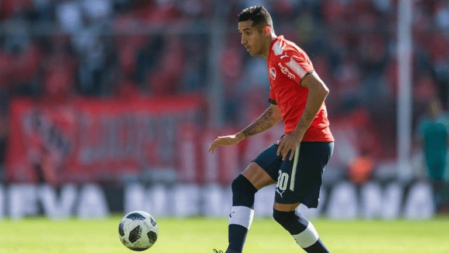

DIABLOS ROJOS
INICIO
FIXTURE
PALMARÉS
GALERIA
CONTACTO
FECHA 2
INDEPENDIENTE vs. PLATENSE
Independiente sonrió en Córdoba
Por InfiernoRojo
El uno por uno de la victoria de Independiente en Córdoba
Por Olé
Las claves de un debut que generan confianza

Por InfiernoRojo
Stillitano y su debut oficial en el Rojo: "Estoy muy orgulloso"
Por Olé
Talleres y el Rojo se enfrentan este sábado en el Kempes
Por El Periódico
Mal arranque de la Reserva de Independiente
Por Soydelrojo